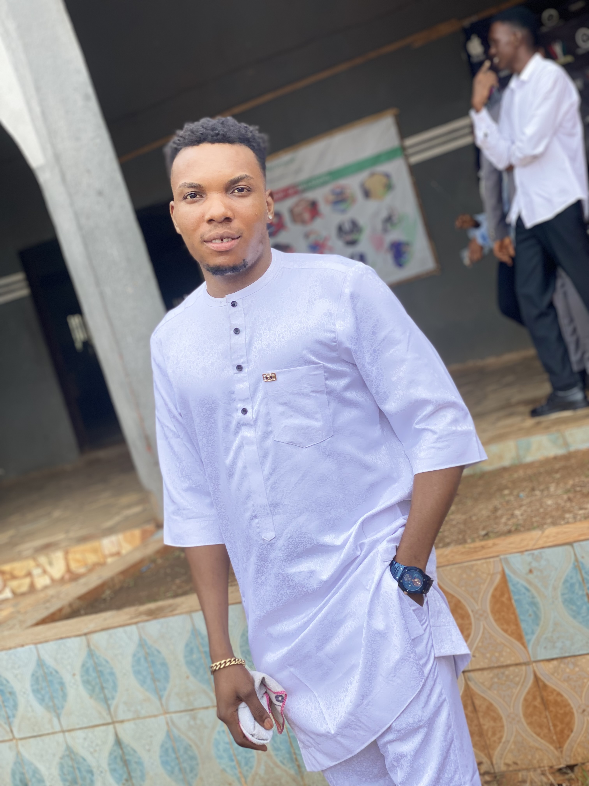

Ibobo onyekachukwu kelvin
No.16 Omiomwanfan Street, Off tipper garage ogida barrack. Edo State /Benin City
Kelvinibobo772@gmail.com

Career objective
To work diligently with existing staff and facilities in an organization, in order to contribute with my internal
competency to the growth and development of the organization so as to achieve central aims and objective, to
collectively promote the image of the organization.
Summary
I am a hardworking and dedicated individual with experience in customer service and administration.
Personal bio data
- Date of birth: 18th july 1996
- Sex: Male
- State of origin: Delta State
- LGA: Ndokwa East
- Nationality: Nigerian
- Language Spoken: English, Benin, igbo, kwale
- Religion: Christian
- Marital status: Single
Education
- Auchi Polytechnic, Auchi
- HND Business Administration & Management 2018-2020
- Auchi Polytechnic, Auchi
- National Diploma Business Administration & Management 2015-2017
- Evbereke Secondary School, Edo State
- Senior Secondary Certificate Examination 2012
- Police children of School, Edo State
- First School Leaving Certificate 2006
Work experience
- ORGANIZATION : Fountain of knowledge group of school. Ondo State
- Post Held: Teacher :2021/2022
- ORGANIZATION : k_couture fashion home Auchi, Edo State
-
- Post Held: Manager:2013/2023
Skills
- Customer service ✅
- Graphic design✅
- Web design✅
- Web development✅
- Fashion design✅
- music✅
- Administration✅
hobbies
contact me
How to be successful
- Discipline
- Dont expect much from anyone {you'll be disappointed}
- work hard & pray
- Be focused